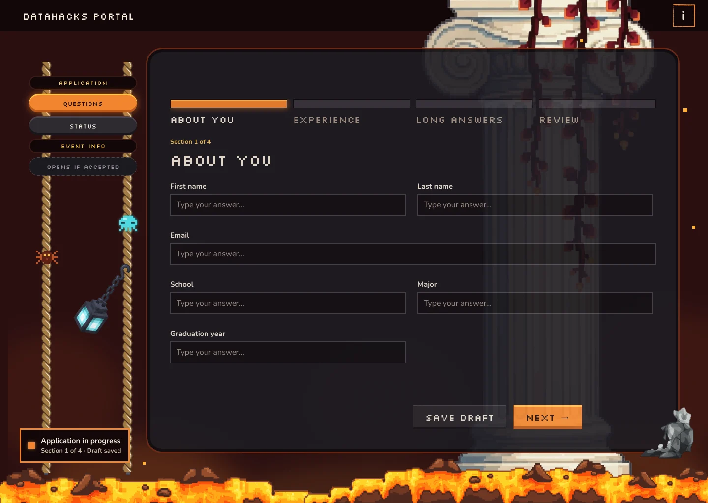
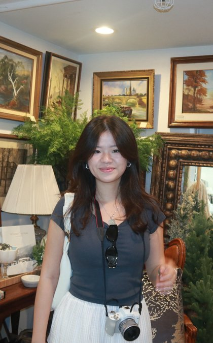

I started in the data.
Models, pipelines, accuracy scores. But the most interesting results kept turning out to be about people: who has to trust the model, and who has to read the dashboard.
Background Noise
An active learning pipeline for bird species from field audio. Margin sampling reached 85.5% with 348 labels, versus 73.2% at random. The best part was catching the model cheating.

Ocean Pulse
A dashboard for 70 years of ocean data. The model hit 98%. The hard part was making it make sense to a policymaker in ten seconds.
"If it says 'probably species X, but not confident,' what is a biologist supposed to do with that?"
Sitting with that question is what turned me toward human-centered design.
So I started designing for them.
Both of these projects come from the same question: what does someone need to know, at the exact moment they need to know it?

Never Wonder Where You Stand
The DataHacks 2027 applicant portal, now live. I co-designed it and owned the application, status and waiver flows, plus the design system. I also hand-painted the mascot, Dyno, and his sticker series.

The 30-Minute Lie
I set out to prove the campus dining app's wait times were wrong. 77 of my own orders said something more interesting, and the redesign changed because of it. There's a demo you can play with.
Then I saw it at city scale.
A summer inside China Telecom's Dongguan headquarters: building an AI tool, delivering it to real clients, and watching a whole city's network get triaged.
Making AI readable.
This quarter I'm working where the model meets the person who has to read its output.
And I paint.
Oil, acrylic, gouache and Procreate. Painting is where I learned to look at something for a long time before deciding what's wrong with it, which turns out to be most of design.
Hi, I'm Laura.

Second-year at UCSD, equally happy in front of a Jupyter notebook or a canvas. I've lived in a lot of places, which may be why I'm always asking who a thing was built for, and who got left out.
Currently
ML research at Engineers for Exploration with the San Diego Zoo, designing for DataHacks 2027, and building the Readability agent for ClearMed.
Looking for
Summer 2027 internships in product, UX and data/AI, plus HCI research where data and human experience meet.
Education
B.S. Data Science, minor in Cognitive Science, UC San Diego, class of 2029.
Background
I came to HCI through data science: building dashboards and realizing good data and good design are the same problem.